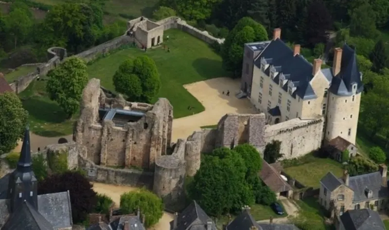
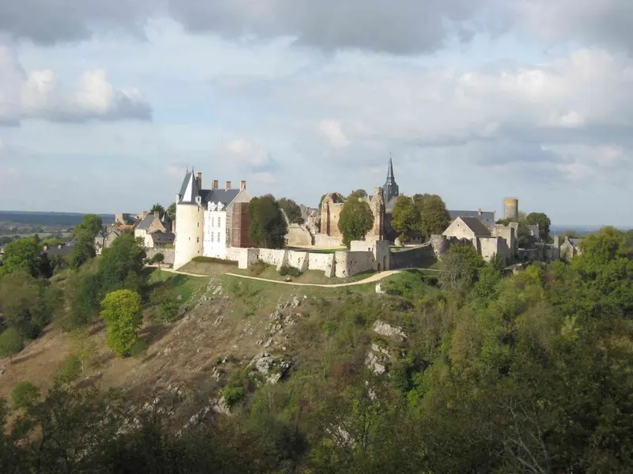
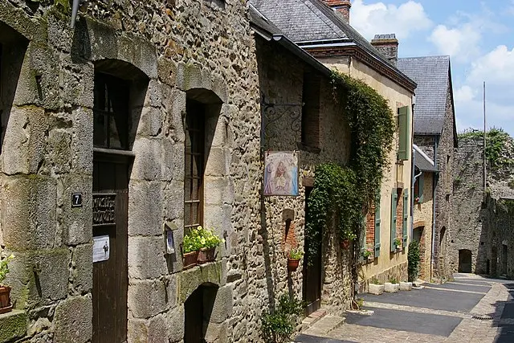
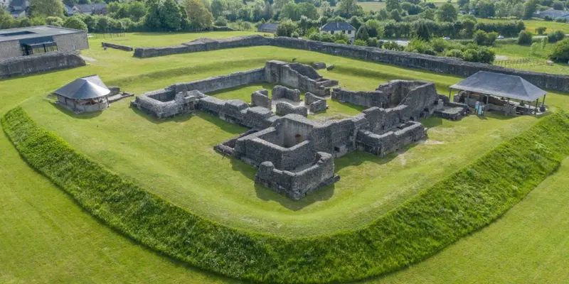
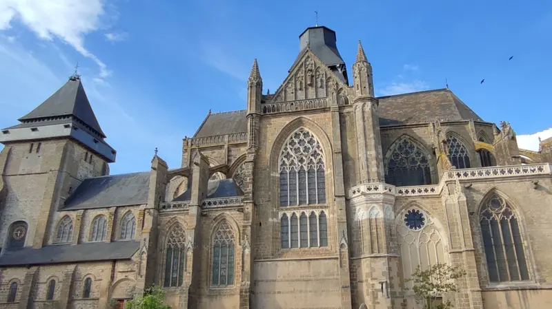

Le château de Sainte-Suzanne
Bâtie au XIe siècle sur un éperon à 70 mètres au-dessus de l’Erve, la forteresse a résisté au siège de Guillaume le Conquérant. On visite le donjon, les remparts et le centre d’interprétation du patrimoine.
Sept visites à moins d’une demi-heure du domaine, de la cité médiévale aux grottes de Saulges.

Les temps de trajet sont donnés en voiture depuis le domaine. Edwige et Franck vous indiqueront volontiers leurs adresses pour déjeuner.

Bâtie au XIe siècle sur un éperon à 70 mètres au-dessus de l’Erve, la forteresse a résisté au siège de Guillaume le Conquérant. On visite le donjon, les remparts et le centre d’interprétation du patrimoine.

Ruelles pavées, maisons de granit, boutiques d’artisans : Sainte-Suzanne est classée parmi les Plus Beaux Villages de France. Le musée de l’Auditoire retrace l’histoire de la cité.

Une randonnée facile au bord de l’Erve, le long des anciens moulins à grain, à papier et à tan qui ont fait vivre la vallée.

Le belvédère d’où l’on photographie la cité : château, remparts et clocher d’un seul regard, surtout en fin de journée.

Un canyon calcaire creusé par l’Erve, deux grottes ouvertes à la visite, un musée de Préhistoire, et des sentiers pour la randonnée, la pêche ou le canoë.

Forteresse, thermes, théâtre et temple : l’ancienne capitale des Diablintes est le site antique le mieux conservé de l’Ouest.

Une nef romane, un chœur gothique lumineux et une tour fortifiée : l’une des plus belles églises de la Mayenne.
Deux nuits suffisent pour voir Sainte-Suzanne, Saulges et Évron sans courir.